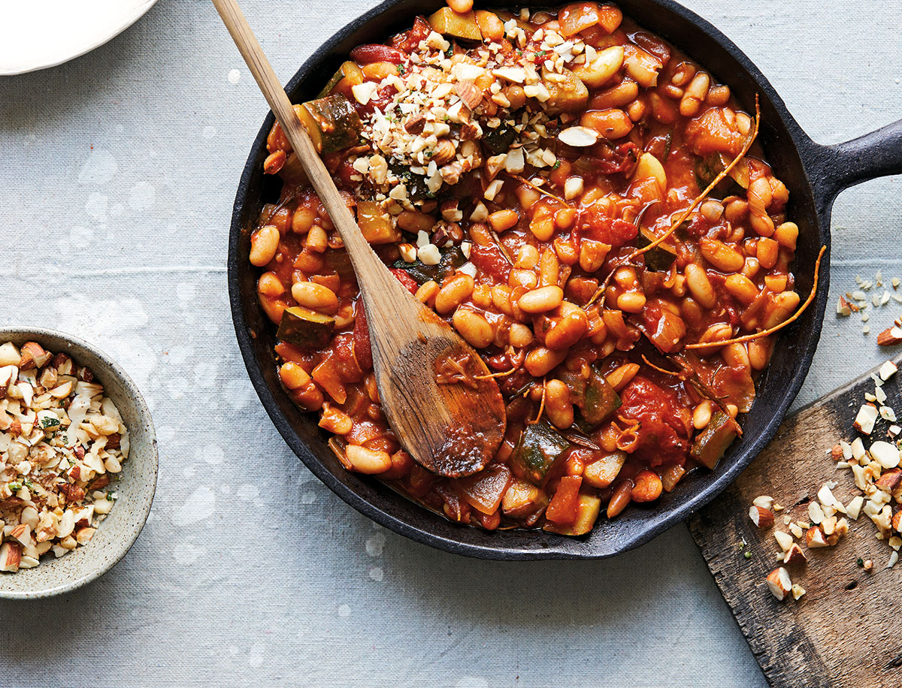
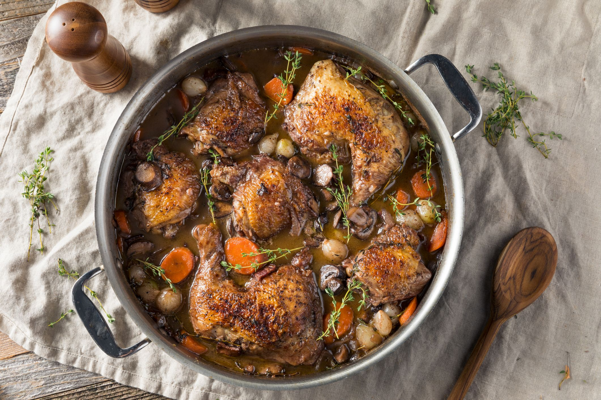

Les Plats
La salade et les frites à volanté

Cassoulet
Bien que cette spécialité française soit originaire du Languedoc, on associe bien volontiers ce plat de cuisine traditionnelle française à la ville de Toulouse. Le cassoulet est un plat délicieux, mais calorique – il est notamment composé de haricots blancs, de confit de canard et de saucisse. C’est le plat idéal à manger en hiver.

Coq au Vin
Le coq au vin est un plat traditionnel de la cuisine française. Pour préparer ce plat, vous avez besoin d’un coq découpé en morceaux cuisiné dans du bon vin (généralement rouge, mais le riesling peut également faire l’affaire) et accompagné d’oignons, de carottes, d’un bouquet garni et de champignons.